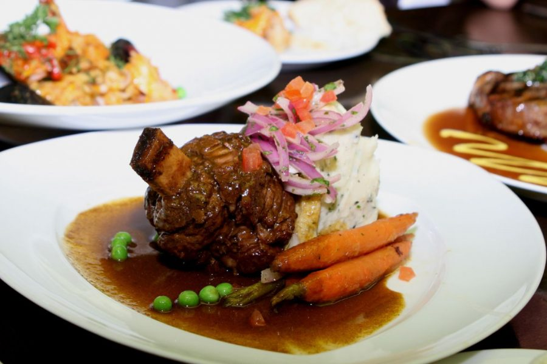

Seco de cordero Peruano

Descripcion
El Seco de cordero es un delicioso plato de estofado de cordero o res. Sazonado con ají, comino, y un bastante cilantro, para darle consistencia y sabrosura al cordero. Un plato que viene de la Sierra peruana se acompaña con papas amarillas cocinar al mismo tiempo y absorber todo el sabor de su picante. Variante de las recetas con carne de res.
Este seco de cordero como plato de fondo, contundente para el menú de la semana se pude disfrutar con una bebida refrescante y se acompaña con arroz graneado blando.
Ingrdientes - 8 porciones
- 1 kilo de carne de cordero
- 6 dientes de ajo
- 1 rodaja de loche
- 1 cebolla blanca y morada
- 1 vaso de chicha dejora
- 1 taza de culantro
- 3 chucharadas de aji panca molido
- 2 chucharadasde pimenton
- 1 cucharada de aji marisol molido
- sal y pimienta
Preparacion
- licuar el culantro. preparar la carne del cordero con pimienta al gusto, el ají panca molido, el pimentón y el ají mirasol molido. añadir el culantro licuado, el loche y la chicha de jora.
- dejar durante dos horas en infusión. freír en una olla los dientes de ajo y la cebolla picada finamente. una vez trasparente ésta, agregar las presas de cordero y cocinar hasta dorarlas. luego, añadir la infusión donde se maceró la carne y tapar la olla.
- cuidar que el jugo no se consuma (agregar caldo de carne de vez en cuando si es necesario).
- luego de 15 minutos, echar sal al gusto y servir con fréjoles y arroz o con yuca sancochada y salsa criolla.